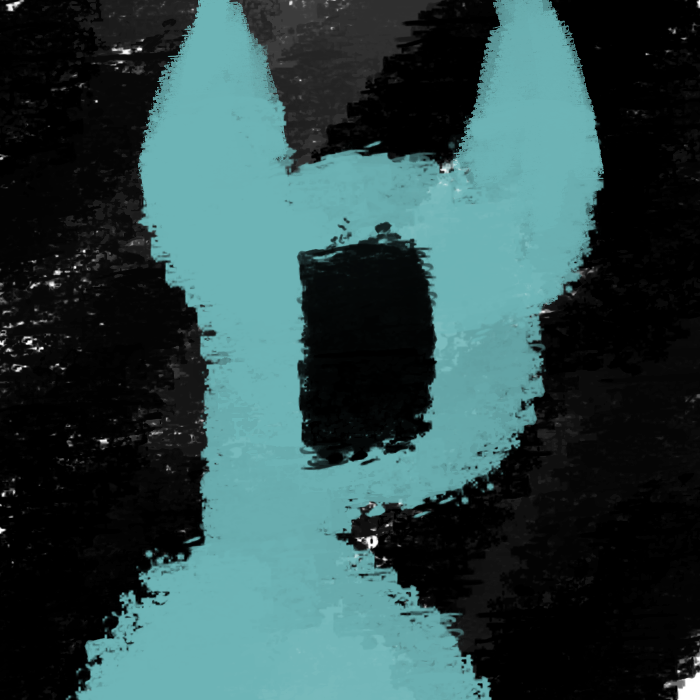

I remember the time that demon first came to me. It was about three months ago, and from then on both everything and nothing changed. Everyday is the same as the one before, a consistent blur where all of my emotions fade away. It's the same monotony
: school, tests, home, extracurriculars, sports, responsibilities, and above all - possession. Possession, and servitude to a society that dictates our every move. Sometimes I wonder what the point is. What is the point of life? We're a puppet
on a string, following the rules and regulations of others until we die, and until that point it's just misfortune after misfortune, where I always fall on the blunt end of things. I try to find solace in the activities I once loved, but guitar,
Piano, games, company, sports, and anything else don't help. It's futile. Everyday I drift into and out of reality, where this blue demon consistently watches me, telling me of my worthlessness. I try to fight it ; I try to fight him, but
I just can't. I really can't stand this, and my head is starting to hurt. *It is now the morning, time for school.*